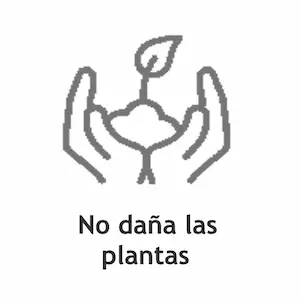
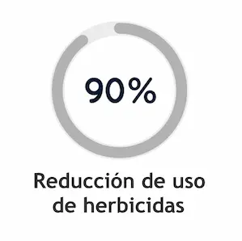
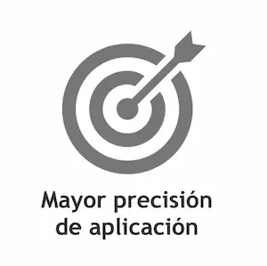

Nuestros servicios
Pulverizaciones
-
Servicio de aplicación aérea de insecticidas, funguicidas y herbicidas para combatir barbechos y emergentes.
La aplicación aérea evita dañar las plantas por pisoteos o golpes de las máquinas, logra una aplicación más homogenea y mayor penetración del producto gracias a la velocidad constante y la turbulencia generada por la hélice. -
Aplicacion de herbicidas para el control de malezas con mosquito equipado con sistema Weedseeker2, permite realizar aplicación verde sobre verde y aplicación selectiva permitiendo un ahorro de gastos de hasta el 90% del producto a aplicar y ayudando a minimizar el impacto ambiental.
-
Aplicación terrestre total (aplicación tradicional).
-
Nuestros equipos: avión Cessna 188 AGWAGON John Deere 4730, Case Patriot, Pla MAP3300 y MAP3250.





Los beneficios de la aplicación selectiva con Weedseeker2
.svg "Contáctenos")